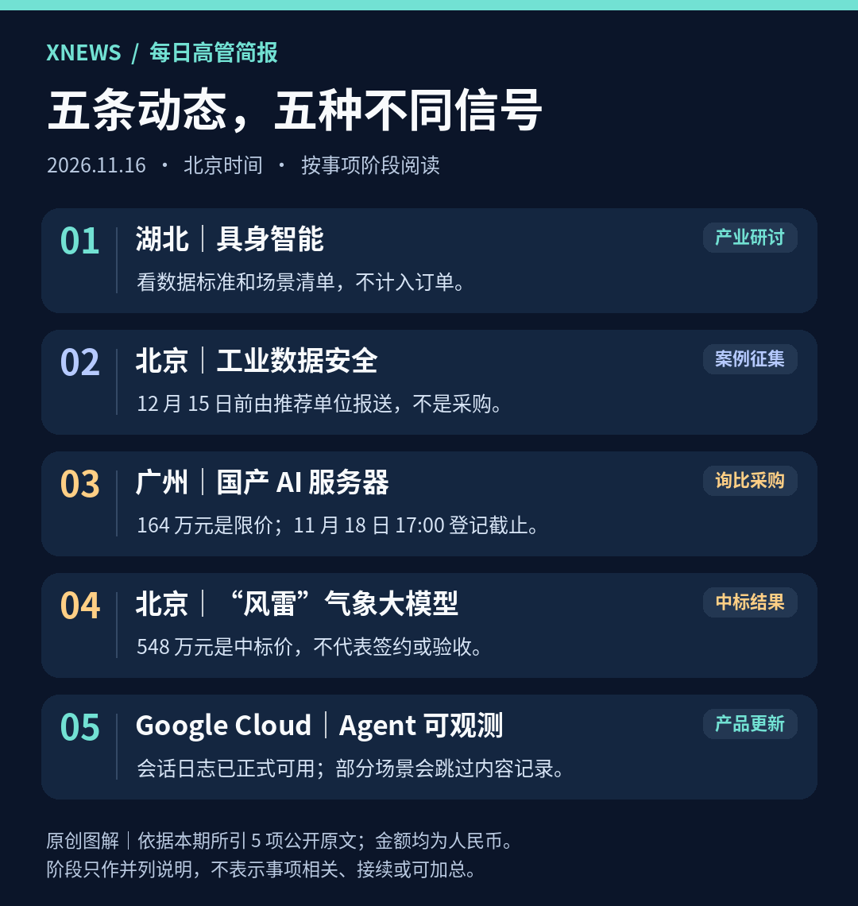

本期范围与证据口径
北京时间 2026 年 11 月 16 日｜检索截止 09:00。 优先窗口：11 月 15 日 09:00 至本期截止；因窗口内可核验且达到选题门槛的新增不足，扩展至 11 月 13 日 09:00，以下 5 条均标为 72 小时扩展。已回看近 7 日已发布简报和同日独立 XNews AI 日报，本期与其 UI SDK、RoPE 两条不重合。

01｜湖北研讨具身智能：先看数据和场景怎么落地
72 小时扩展｜11 月 14 日举行；湖北省政府门户 11 月 15 日 08:50 发布。 省级科创沙龙在华中科技大学举行，围绕具身智能研发、创新平台和产业化听取高校与企业意见。公开报道明确提到数据采集、汇聚和流通交易规范，同时提出依托光电子、汽车制造和大健康等产业开放应用场景。会议披露的是工作方向，未发布新的采购清单、专项预算或实施细则。[1]
重要性与影响： 若随后有数据平台和真实工位试点，机会可能落在训练数据、场景验证与产线集成，而不只是算力设备。建议： 跟踪场景业主、数据权责和验收指标出现后再评估投入。证据边界： 已读省政府门户所载会议报道；未见本次活动另发正式政策文件。
02｜北京征集工业数据安全案例：看成效，不是新采购
72 小时扩展｜正文落款 11 月 12 日，官网标注 11 月 14 日发布并实施。 北京市经信局征集 2024 年以来已经实施、取得成效的案例，面向在京登记的工业及软件和信息技术服务独立法人。既看分类分级、重要数据识别与备案，也看上云、委托处理及供应链协作的责任划分。每单位原则上不超过 5 例，推荐单位须在 12 月 15 日前报送。[2]
重要性与影响： 评价要求更接近可复用的落地证据，入选不等于订单或补贴。建议： 优先整理能证明整改或运营改善的脱敏案例，向推荐单位核对企业自己的截止时间；通知要求案例自主知识产权，不提交敏感内容。证据边界： 已读通知正文，未核验附件；页面路径日期不作为发布日期。
03｜广州交通研究院询比：164 万元限价买的是服务器
72 小时扩展｜11 月 13 日 21:00 发布并开放登记。 广州市交通运输研究院有限公司对人工智能赋能管理技术研究与示范应用项目进行询比，最高响应限价人民币 164 万元。公告列明实际采购两台采用国产 ARM CPU 和国产 NPU 的 AI 智算服务器，价格包含运输、安装和配套操作系统，要求三年原厂维保；并未采购 AI 应用开发。[3]
重要性与影响： 适合具备设备供货和维保能力的团队，不宜计入软件商机。建议： 先核对是否有 2023 年以来独立承揽的至少一单 100 万元及以上类似服务器销售业绩；项目不接受联合体。11 月 18 日 17:00 登记截止，11 月 24 日 09:30 响应截止。证据边界： 已读原发公告，未登录取得完整采购文件，验收、付款以文件为准。
04｜国家气象中心公布“风雷”大模型中标：548 万元是结果，不是上线
72 小时扩展｜11 月 9 日开标；11 月 13 日 17:35 公布中标。 国家气象中心“风雷”人工智能大模型分系统公开中标结果，供应商为北京文泽智远信息技术有限公司，中标金额人民币 548 万元。原招标公告列明预算和最高限价均为 549.11 万元，履行期限为合同签订后 12 个月。本期新增证据是中标结果，不是重新招标、签约或验收。[4][5]
重要性与影响： 这是一笔垂直气象服务采购结果，不能按算力卡或通用模型价格解读。建议： 关注合同与后续验收披露，再看数据接入、服务边界和业务指标是否可复用。证据边界： 已读中国政府采购网两份公告正文；中标正文将服务范围和标准指向附件，本次未完整读取附件，不推断模型或硬件配置。
05｜Google 更新企业 Agent 可观测：有日志，不代表没有盲区
72 小时扩展｜Google Cloud 官方文章 11 月 13 日发布并宣布更新，页面未列具体时刻。 BigQuery 会话日志和监控、Looker 系统活动看板已正式可用；每日 token 配额、BigQuery 原生评测等仍在预览。部分会话日志可写入客户控制的数据表；若知识源使用行级安全、列级策略标签或动态掩码，当轮会跳过会话内容记录，记录出错也不会阻断聊天。[6]
重要性与影响： 企业智能体平台的竞争已延伸到可诊断、可评测和可控成本；对要求留痕的流程，缺日志时仍继续执行是单独的设计选择。建议： 验收分别测任务通过率、单位成功任务成本和日志缺失时的处置，敏感流程明确暂停或人工接管规则。证据边界： 已读厂商原文，未在生产环境复测，不据此判断中国地区可用性或实际成本。
存量事项
武汉光谷 5G＋工业互联网大会及同期算力互联网大会原定 11 月 18 日至 20 日举行。此为较早发布的日程，不是本期新增或开幕确认；关注后续是否披露可核验的场景清单和试点责任方。[7]
今日判断
本期最可执行的窗口在广州：先对照独立销售业绩和原厂维保资格，再决定是否投入。北京的数据安全征集和湖北的具身智能研讨都值得跟踪，但只有出现具体业主、责任边界和验收要求，才宜转入商机。气象大模型有了明确中标结果，下一份值得等的是合同和验收，而不是从中标价倒推算力配置。企业 Agent 上生产时，应把敏感流程缺日志怎么办写进验收，不能只看一张监控看板。